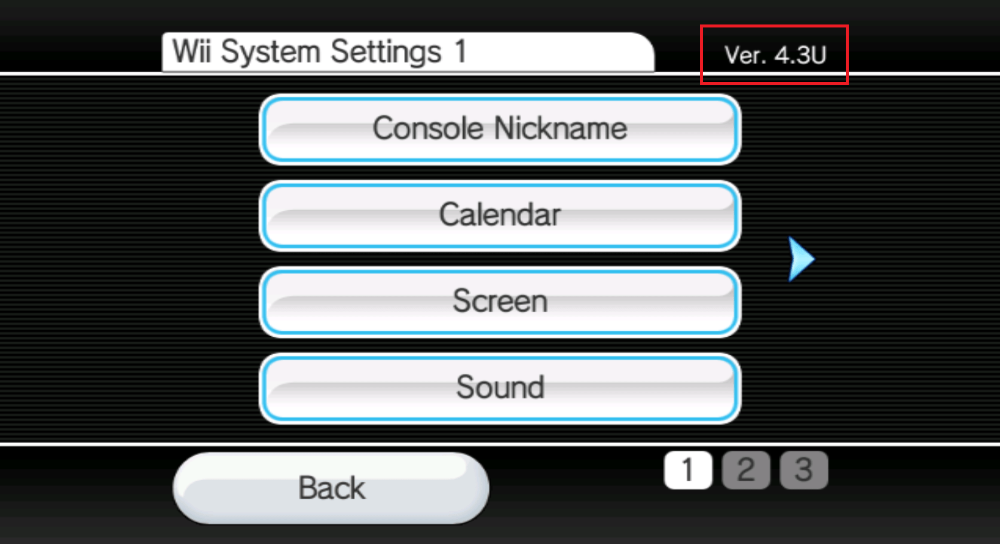

BlueBomb
Este foarte recomandat să nu folosești niciun ghid video pentru modificarea consolei tale Wii mini pentru că este o șansă foarte mare să o brick-uiești.
Dacă ai nevoie de ajutor cu orice legat de acest tutorial, te rugăm să te alături serverului de Discord Wii mini Hacking. (recomandat)

BlueBomb este un exploit care profită de un defect în bibliotecile Bluetooth din consolele Wii și Wii mini. Deși este singurul exploit care merge pentru Wii mini, BlueBomb poate rula și pe consola Wii originală. Acest exploit de asemenea permite recuperarea din anumite brick-uri, precum un banner brick.
Pentru consola Wii originală, nu este recomandat să folosești BlueBomb dacă intenționezi să instalezi Homebrew Channel și BootMii, pentru că există exploit-uri mai convenabile.
Secțiunea I - Ce îți trebuie
- Un calculator Linux
- O Mașină Virtuală poate funcționa, însă nu este recomandat datorită complexității sale în a face Bluetooth să funcționeze. Dacă este posibil, te rugăm folosește un LiveUSB așa cum este descris și mai jos.
- Dacă ai un Raspberry Pi, îl poți folosi în schimb pentru că cel mai probabil are Linux deja instalat.
- Subsistemul Windows pentru Linux nu va merge pentru că nu are acces direct la adaptorul Bluetooth sau la porturile USB.
- Dacă nu ai Linux, Ubuntu este cea mai ușor de utilizat opțiune și poate fi rulat pe calculatoarele care au instalat Windows sau Mac.
- Dispozitivele 32-bit vor avea nevoie de Ubuntu 16.04.
- Pentru dispozitivele 64-bit este recomandat să folosești ediția LTS datorită stabilității sale, dar merge și cea mai nouă versiune.
- Poți instala un mediu Linux Live pe un stick USB în loc să-l instalezi pe calculatorul tău.
- Un adaptor Bluetooth.
- Un adaptor Bluetooth intern va merge de asemenea.
- Dacă nu ai unul, asigură-te să iei unul compatibil cu Linux.
- O unitate USB formatată ca FAT32.
- Acesta nu poate fi același unitate USB folosită și pentru sistemul de operare Linux.
Secțiunea II - Efectuarea exploitului
- Descarcă instalatorul HackMii din site-ul BootMii.
- (Dacă încercați să reparați un brick, ar trebui de asemenea să copiezi aplicația homebrew pe care vrei să o folosești în dosarul /apps/)
- Extrage-l și plasează fișierul
boot.elfîn stick-ul tău USB.- (Chiar și pentru un Wii mini, bootmini.elf nu va merge, scopul lui este complet diferit și irelevant. Folosește boot.elf în toate cazurile). 1. Conectează stick-ul USB în consolă. Pentru Wii mini, portul USB este în spate. Pentru un Wii normal, folosește portul de jos. (sau portul din dreapta dacă este vertical). 1. Pornește consolă și navighează către meniul de setări. În colțul din dreapta sus vei vedea un cod din 4 caractere ca cel din imaginea de mai jos. Acest cod este versiunea Meniului Wii, notează-l pentru că vei avea nevoie de el mai târziu. După aceea, oprește consola. 
- Pornește-ți distro-ul Linux, și asigura-te că ești conectat la internet.
- Pornește-ți consola și nu conecta nici un Wii Remote.
- Rulează următoarele comenzi:
wget https://wii.guide/assets/files/bluebomb-helper.sh chmod +x bluebomb-helper.sh ./bluebomb-helper.sh - Asistentul apoi va descărca fișierele necesare, și va cere informații despre consola ta.
- Dacă ai selectat Wii mini vei fi cerut să îți specifici regiunea. Acesta poate fi determinat de ultima literă a versiunii Wii Menu (
Upentru modele USA șiEpentru modele PAL). - Dacă ai selectat Wii vei fi cerut să îți specifici Versiunea Wii Menu (Ce ai determinat în pasul 4)
- Dacă ai selectat Wii mini vei fi cerut să îți specifici regiunea. Acesta poate fi determinat de ultima literă a versiunii Wii Menu (
- Pornește-ți consola și nu conecta nici un Wii Remote.
- Apasă butonul Sync repetat până terminal-ul arată
got connection handle. Asta ar putea lua numeroase încercări, deci nu renunța.
Asigura-te că sistemul Wii este aproape de calculatorul care rulează exploit-ul, ideal ar trebui să fie mai puțin de un metru.
Consola acum ar trebui să ruleze instalatorul HackMii. Acum poți închide calculatorul tău Linux dacă nu plănuiești să-l folosești mai târziu.
Dacă folosești un Wii, procedează la instalarea Homebrew Channel și BootMii
Dacă folosești un Wii mini, procedează la instalarea Homebrew Channel